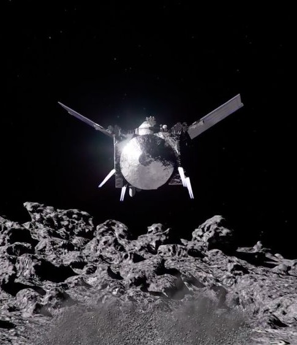
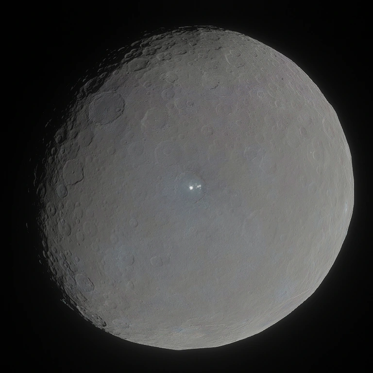
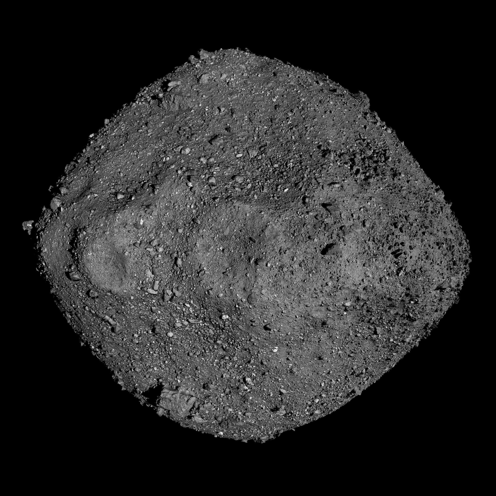
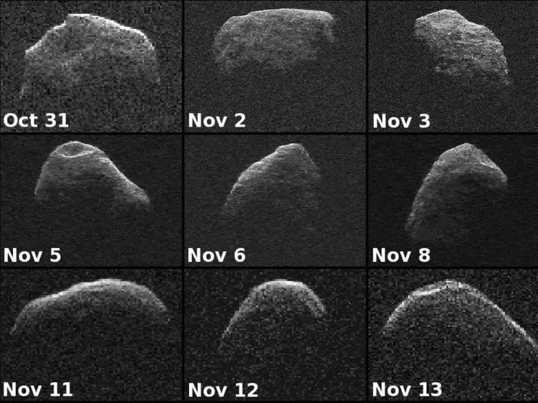

Osiris-apex
OSIRIS-APEX is a mission to study the physical changes to asteroid Apophis...

Ceres
Ceres is the only dwarf planet in the inner solar system...

Bennu
A carbon-rich "rubble pile" asteroid that provided NASA with its first asteroid sample return. 101955 Bennu (provisional designation 1999 RQ 36 ) is a carbonaceous asteroid in the Apollo group discovered by the LINEAR Project on 11 September 1999. -Credit NASA

Apophis
99942 Apophis (provisional designation 2004 MN4) is a near-Earth asteroid and a potentially hazardous object, 450 metres (1,480 ft) by 170 metres (560 ft) in size. -Credit NASA